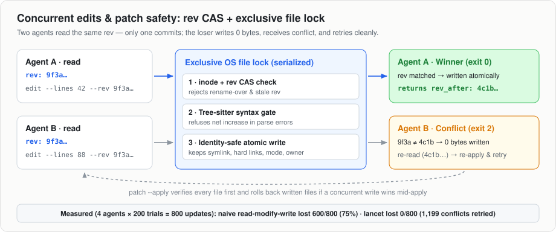

Line, Symbol, Find & Multi-Hunk CAS Editing
Zero line drift across multi-hunk edits and zero silent overwrites when multiple agents edit concurrently.
lancet edit mutates files using the exact line numbers and rev hashes produced by lancet read. Every call prints a dry-run unified diff unless --apply is specified.

read returns 1-based line numbers and XXH3-64 rev consumed directly by edit and rename.Targeting One Hunk (--lines, --symbol, --find)#
Choose exactly one target and exactly one operation:
- Targets:
--lines START:END|LINE|START:·--symbol NAME·--find TEXT [--all] - Operations:
--with TEXT·--with-file PATH|-·--delete·--insert-before TEXT·--insert-after TEXT
# 1. Replace exact line span
lancet edit src/net.rs --lines 12:15 --with ' timeout_ms: 5000,' \
--rev e70d5a898f122a62 --apply
# 2. Replace declaration by AST symbol (includes doc comments & attributes!)
lancet edit src/net.rs --symbol retry_limit --with-file new_fn.rs --rev <REV> --apply
# 3. Unique exact text replacement (matches both LF and CRLF line endings)
lancet edit src/net.rs --find 'let retries = 3;' --with 'let retries = 5;' --rev <REV> --apply
# 4. Replace every match explicitly (--find refuses non-unique unless --all)
lancet edit src/net.rs --find 'old_fn(' --with 'new_fn(' --all --rev <REV> --apply--symbolboundaries: matchesread --symbolliterally — leading///doc comments and#[attr]attributes are part of the span and will be removed if omitted from your replacement.--finduniqueness: without--all, matching 0 or >1 times refuses withinvalid_queryand prints the offending line numbers so you can add surrounding context cleanly.
Atomic Multi-Hunk Editing (--edits)#
Never make two sequential line-numbered edits to one file from a single read — the first edit shifts lines for the second. Instead pass one JSON array via --edits FILE or --edits - (stdin). Lancet resolves every hunk in original file coordinates, checks for overlaps, and commits all-or-nothing:
lancet edit src/net.rs --rev e70d5a898f122a62 --apply --edits - <<'JSON'
[
{"lines": "10:12", "with": "const RETRIES: u32 = 5;"},
{"symbol": "legacy_helper", "delete": true},
{"find": "old_metric(", "with": "new_metric(", "all": true},
{"lines": "40", "insert_after": " tracing::info!(\"updated\");"}
]
JSONEach object must provide exactly one target key (lines, symbol, or find; optional all with find) and exactly one operation key (with, delete, insert_before, or insert_after).
Multi-Agent Compare-and-Swap & Syntax Gate#

status: "conflict" and 0 bytes written.- Capture
revfromlancet read --json(or chainrev_afterfrom the previouslancet edit --json). - Run
lancet edit ... --rev <REV> --apply. If another process wrote in between, Lancet fails withstatus: "conflict"(exit2). - On
conflict, re-runlancet read, adapt your edit to the updated text, and retry with the newrev.
Tree-sitter syntax gate: Lancet parses supported languages before and after editing and refuses any net increase in syntax errors (so an already broken file can still be fixed step by step). Pass --allow-syntax-errors only when staging partial edits intentionally.